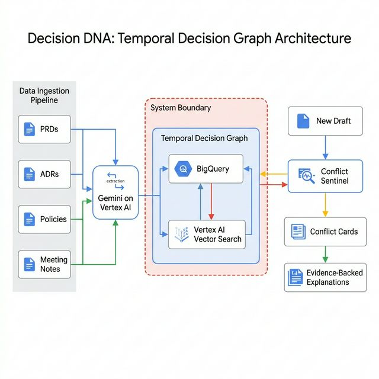

TCS^AI Google Hackathon 2026 · Track 1: Intelligent Search & Gemini Enterprise
🧬
Decision DNA
An Institutional Memory Engine & Conflict Sentinel that evaluates tech specs and PRDs against past architectural decisions, post-mortems, and compliance policies in real-time.
Sana Iqbal
Employee ID: 1213383
Section 01
Executive Summary 20% Weight
🛑 The Organizational Problem: Modern engineering teams suffer from severe Corporate Amnesia. Past architectural decisions (ADRs) are forgotten, post-mortems are ignored, and new engineers continually re-introduce past mistakes, vulnerabilities, and non-compliant vendors, leading to repeating incidents and massive technical debt.
💡 Our Solution: Decision DNA operates as a "Conflict Sentinel". Using Vertex AI's Multi-Agent architecture and Knowledge Connector grounding (Google Drive), it autonomously analyzes new PRDs and code changes, immediately detecting contradictions against the organization's institutional memory (past outages, ADRs, compliance policies, etc.).
Section 02
Multi-Agent Architecture 15% Weight
1. Ideathon Concept Blueprint

Figure 1a: Conceptual Design — Initial architecture connecting Enterprise Memory to CI/CD pipelines and the developer workflow
2. Vertex AI Live Implementation
Multi-Agent System Route Flow
👤
Engineer
→
🧬
Decision DNA
Orchestrator
→
🛡️
Conflict Sentinel
PRD/Architecture
⚖️
Code Review Judge
Code PR Analysis
Figure 1b: Live Implementation — Using Vertex Agent Engine to dynamically route context directly to the specialized evaluation agents

Figure 1a: Orchestrator flow diagram demonstrating routing logic to sub-agents

Figure 1b: Conflict Sentinel agent configuration detail
Section 03
Core Prompt Engineering & Guardrails 15% Weight
The orchestrator and its specialized agents operate under stringent system instructions. These instructions compel the system to categorize threats, identify exact enterprise rule violations, and cite the precise institutional memory source.

Figure 2a: Main Orchestrator Prompt defining role, strict rules, and tool access boundaries

Figure 2b: System instructions enforcing specific formatting and explicit "Do Not Override" guardrails
Section 04
Enterprise Grounding 20% Weight
Decision DNA is powered by 16 critical enterprise memory documents. Using Vertex Agent Builder's native Google Drive Connector and direct Knowledge uploads, the agents perform real-time RAG against a unified knowledge base, accessing ADRs, architectural standards, post-mortems, and compliance policies.

Figure 3a: Knowledge configuration mapping Vertex agent to Enterprise Google Drive and File Uploads

Figure 3b: Grounding corpus containing Post-Mortems, ADRs, Security Policies, and Vendor Guidelines
Section 05
Conflict Sentinel in Action 20% Weight
By simulating a PRD review (DataViz Integration), we comprehensively prove the capability of the Conflict Sentinel to intercept bad architectural proposals before they are implemented.

Figure 4a: GDPR Data Residency violation (Conflict 1) identified during PRD review, correctly referencing Data_Classification_Policy.txt

Figure 4b: Detection of an unapproved third-party vendor (DataViz Corp) referenced by Vendor_Management_Policy_2025.txt

Figure 4c: Sentinel blocking a proposed Synchronous API call, enforcing the enterprise event-driven standard (ADR_018)
Section 05 (continued)
Post-Mortem Intelligence Integration
The Final Protective Layer: Decision DNA proactively connects proposed code changes or tech specs directly to historical post-mortems. When an engineer attempts a risky implementation, they are alerted to past incidents caused by the exact same architectural flaw.

Figure 4d: Code Review Judge catching PII logging and explicitly referencing "Post_Mortem_PII_Leak_2025_01.txt" as historical proof of consequence.
Section 06
Setup & Continuous Monitoring 10% Weight
To ensure 100% compliance coverage, Vertex AI Agent scheduled executions can invoke the agent against newly committed documents or codebase PRs automatically.

Figure 5a: Agent configuration for continuous environment monitoring and execution scheduling
Section 07
Conclusion & Evidence Checklist
Decision DNA solves Corporate Amnesia by creating an active, intelligent immune system for enterprise architecture. By integrating Vertex AI's Multi-Agent architecture with a native Document Grounding Data Store, we shift from passive policy documents to active architectural enforcement, reducing technical debt and mitigating repeating outages.
✅ Track 1 Idea 4 Evidence Checklist
✓ 1a. Orchestrator Flow View
✓ 1b. Sub-Agent - Conflict Sentinel
✓ 1c. Sub-Agent - Code Review Judge
✓ 2a. Orchestrator Prompt Configuration
✓ 2b. System Instructions & Security Guardrails
✓ 3a. Knowledge Connector & Tool Integration
✓ 3b. Enterprise Memory Store (Google Drive)
✓ 4a. PRD Review Execution (DataViz)
✓ 4b. Compliance Violation Detection (GDPR)
✓ 4c. Vendor Risk Analysis (Unapproved)
✓ 4d. Contextual Conflict Resolution (ADR-018)
✓ 4e. Post-Mortem Intelligence Integration
✓ 5a. Continuous Monitoring Configuration
🧬
Decision DNA
Built on Google Vertex AI Agent Engine
© 2026 Tata Consultancy Services Limited · tcs^AI Hackathon